PIONEER （パイオニア）
1938年創業、1947年設立のオーディオ専業メーカー。「カロッツェリア」シリーズのカーコンポーネントや、レーザーディスクプレーヤーをはじめとした映像関連機器にも強い。DVDレコーダーの先鞭を付けたのもこのメーカー。（＊）
古くからのオーディオ専業メーカーであり、1960年代前半に部品メーカーから製品メーカーに転換した頃には、すでにアナログディスクプレイヤーを発売していた。ただしスピーカー関連からスタートした関係か、製品数はさほど多くなかった。
＊ 現在では、オーディオ事業から撤退を発表、関連事業は、オンキヨーに売却され、2015年3月2日よりオンキヨーの完全子会社のオンキヨー&パイオニアに移っている。
�T.カートリッジ
国内の大手オーディオメーカーに良くある1970年代中盤まではMM型、70年代後半よりMCに進出するパターンをたどった。ただしMC型は単品商品としては2機種出したのに留まる。型番はカートリッジ単体のものは「PC」、シェル付きのものは「PS」。
1.MM型カートリッジ
PC-2桁モデルは、基本的にプレイヤー付属カートリッジを一般向けに販売したもの。本格的な単品販売製品はPC-3桁モデルである。1976年頃「�U」型モデルになった。PS-600/800の発売は1977年である。
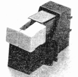 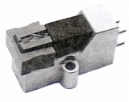
PC-10 PC-11 PC-15 PC-20 PC-20LS PC-21
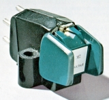 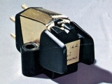
PC-110 PC-330 PC-550E PC-770EX PC-1000
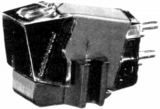
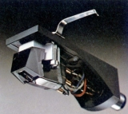
(左 PC-500E/�U 右 PC-1000/�U)PC-110/�U PC-131 PC-330/�U PC-550E/�U PC-1000/�U
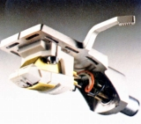
(PS-800)
2.MC型カートリッジ
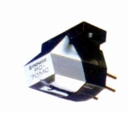
(PC-70MC)
�U.昇圧トランス・ヘッドアンプ
古くからのオーディオ専業メーカーらしく、このジャンルの製品には珍しいものも作っていたようだ。クリスタル型カートジッジ用システムに電磁型カートリッジを接続するヘッドアンプや、デンオンのAU-303のようなアンプのオプションとしての昇圧トランスもあったらしい。ただし単体コンポとしてのMC型カートリッジの昇圧機器は、自社ブランドのMC型が少なかったせいか、管理人の手元資料ではヘッドアンプ1機種しか見つからなかった。
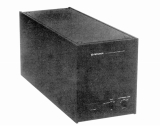
�V.トーンアーム
手元資料でわかる範囲では1966年発売のPA-100が最古の製品である。基本的に一時代に一機種だったようだ。ただしExclusive
EA10は、Exclusiveブランドが「パックス株式会社（*）」で運営されていた時代に発売された為、この限りではない。
(*)パックス�梶@パイオニアが1977年10月設立した会社。当初パイオニアの高級ブランド「Exclusive」の製品を扱っていた。その後消滅？
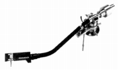
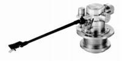
(左 PA-1000 右 EA-10)�W.ヘッドシェル他
継続してアームを販売していたメーカーであるため、ヘッドシェルは7種が確認できた。その他にはコストパフォーマンスの良さで知られたターンテーブルシートがあった。